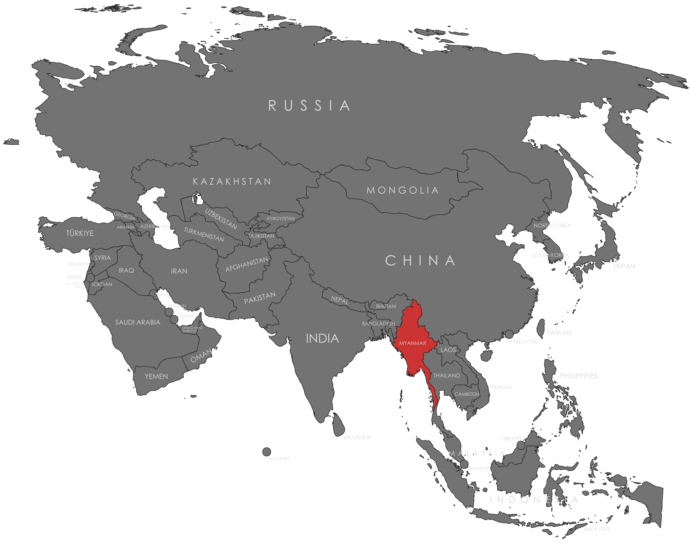

Specifications
- Local Name: မြန်မာ (Myanma / Myanmar)
- Proportion: 2:3
- Name of the Flag: တိုင်းရင်းသားများအမျိုးသားမော်လ် (National Flag of Myanmar)
- Adopted: October 21, 2010
Symbolism
- Yellow: Solidarity and unity of the people
- Green: Peace, tranquility, and the country’s natural wealth
- Red: Courage, determination, and bravery
- White five-pointed star at the center: The union of the country and its people
- Horizontal tricolor: Yellow-Green-Red
Colors:
Shapes / Symbols:
Meaning / Special Display
- The flag is prominently displayed during Union Day and other national holidays to celebrate unity and independence.
- It symbolizes national cohesion and the diverse cultural heritage of Myanmar’s ethnic groups.
Description
- The flag represents Myanmar’s commitment to unity, peace, and courage in nation-building.
- For citizens, it signifies pride in national identity and the harmony among its ethnic communities.

Return to Gallery